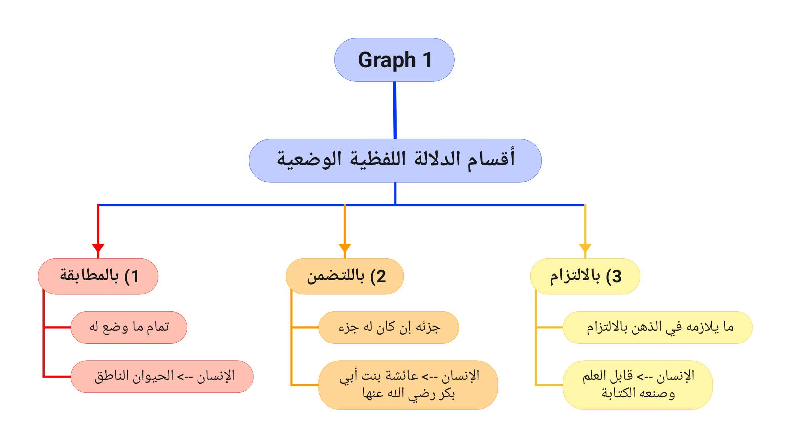

1.1 Expressions indicate the meaning of what types of things?
An expression | اللفظ indicates the following meanings through assignment:
- The entire thing it is assigned to. This is an equal connection | مطابقة .
- e.g. the expression "human" indicates Human (The Rational Animal).
-
A part of the thing it is assigned to, if it has a part. This is a
part within a whole connection | التضمن.
- e.g. the expression "human" indicates Aisha bint Abu Bakr, may Allah have mercy on her, who is a part of "human[kind]".
-
The thing it necessitates to be produced in the mind. This is a
necessary connection | الإلتزام
- e.g. the expression "human" indicates "something that can have the knowledge and capability of writing", because this concept necessitates one to think of a human being, as humans are the only creatures who know how to write
